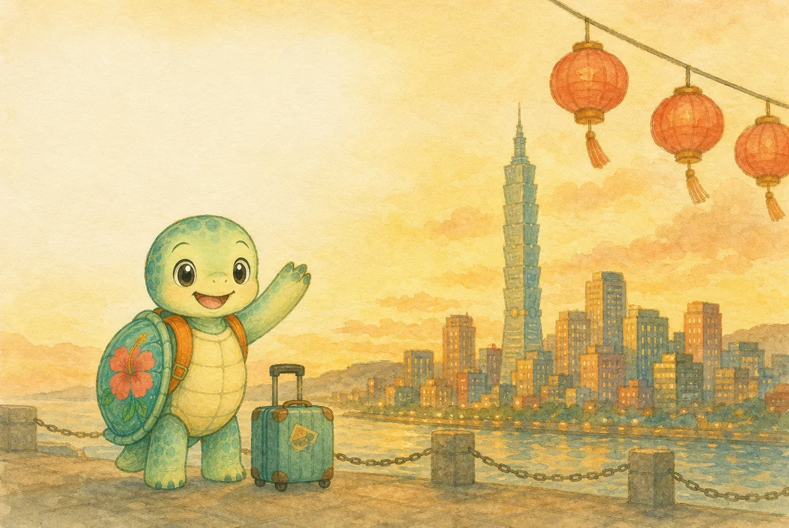
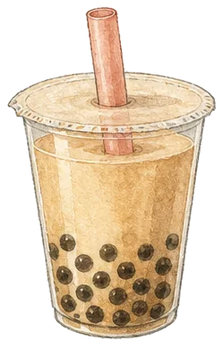
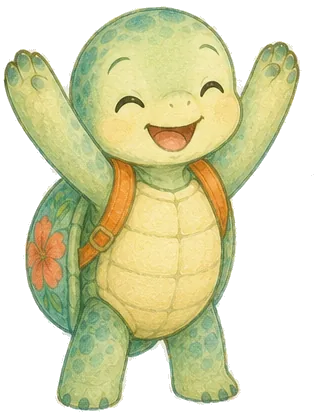
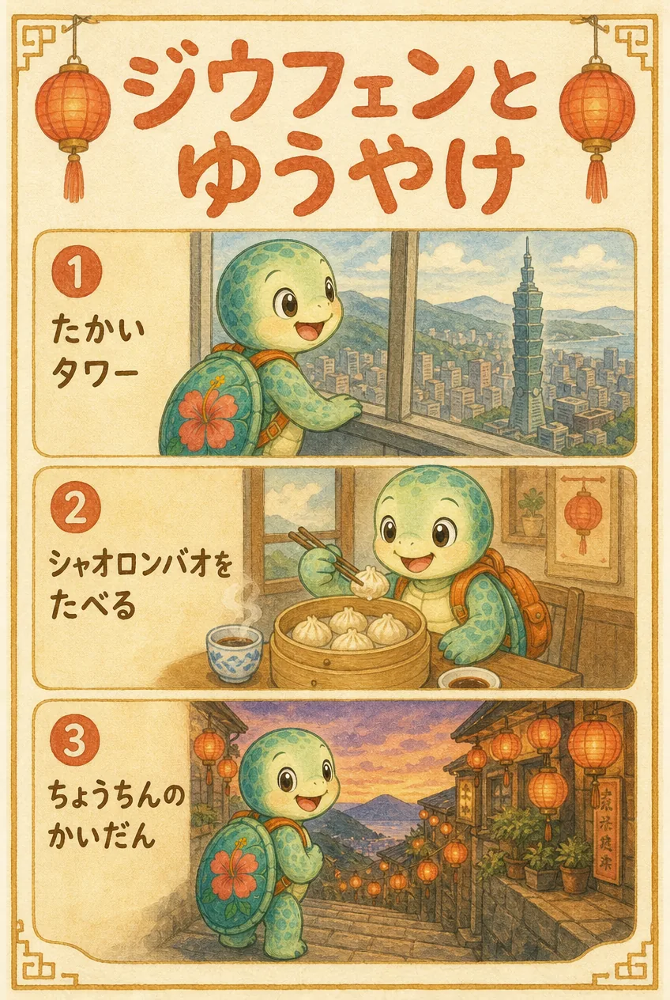

カメと台北 - UI mock (390px, iOS)
warm paper travel journal / Zen Maru Gothic + LXGW WenKai TC / 繁體字のみ
1 - ホーム
你好！
台北へ、いこう
出発まで あと24日

DAY 1
台北にとうちゃく
75
DAY 2
九份とゆうやけ
30
DAY 3
おみやげとバイバイ
0
つづきから
ホーム
旅
ポスター
ことば
シール
2 - ことばカード（まなぶ）
Day 3・タピオカを注文する

珍珠奶茶
zhēn zhū nǎi chá
タピオカミルクティー
ジェンジュー・ナイチャー
発音を聞く
つぎへ
3 - れんしゅう（ペアあわせ）
ペアをつくろう
おなじ意味のカードをタップ
半糖
甘さ半分
少冰
Lサイズ
大杯
氷少なめ
好喝
おいしい
いいね！ その調子
4 - レッスンクリア

レッスンクリア！
「タピオカを注文する」ぜんぶ正解
+1 シール
つぎのレッスンへ
ホームにもどる
5 - 旅の1日（Day 2）
DAY 2
9月20日(日)・九份とゆうやけ

Day 2 ポスター
タップで大きく見る
{{ stop.time }}
{{ stop.place }}
{{ stop.note }}
れんしゅう
ホーム
旅
ポスター
ことば
シール